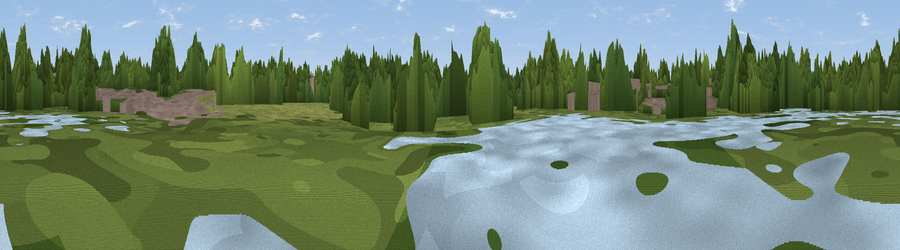

Viewpoint near Staines-upon-Thames
#44954 in England · top 72% of its area beats it · near Staines-upon-ThamesWhere it is
The exact computed spot (TQ 02795 72138). Click the marker for map links.
The view, rendered

A 360° render of this exact spot computed from the terrain model, tree cover and land cover — summer colours, afternoon light, calibrated against photographs of famous viewpoints. Real trees, hedges and buildings will differ in detail.
The panorama
Grey silhouette: terrain skyline in each direction (720 bearings, Earth curvature and refraction included). Dashed green: skyline with trees (+15 m) and buildings (+8 m) as obstacles. Blue strip: how far the ground is visible on each bearing.
Where the view opens
Wedge length = distance to the farthest visible ground on that bearing (vegetation-aware). Rings at 10, 25 and 50 km.
What fills the view
49% woodland · 24% grassland · 23% built-up · 4% water
Angular shares of the visible panorama (visual magnitude), not map area. Landscape diversity 0.51 (0–1 Shannon).
Key numbers
More beautiful places nearby
The staircase of upgrades: each row has a higher view potential than everything closer. Driving times are estimates from straight-line distance, calibrated against real road routing — check an actual route before setting out.
| Place | Direction | Drive | Score |
|---|---|---|---|
| Viewpoint near Englefield Green | W · 3 km | ~7 min | 50.2 |
| Viewpoint near Bishopsgate | W · 3 km | ~8 min | 50.6 |
| Viewpoint near Bishopsgate | W · 4 km | ~9 min | 53.6 |
| Harrow on the Hill | NE · 20 km | ~34 min | 60.7 |
| Viewpoint near Guildford | SSW · 24 km | ~39 min | 65.4 |
| Viewpoint near Compton | SSW · 25 km | ~40 min | 66.7 |
| Viewpoint near Box Hill Village | SE · 27 km | ~43 min | 68.1 |
| Box Hill | SE · 27 km | ~43 min | 70.4 |
51.43892, -0.52245 · source: osm viewpoint · position refined by local search. Computed location — check access rights before visiting.